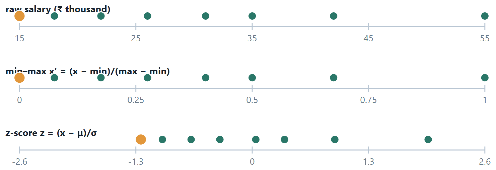
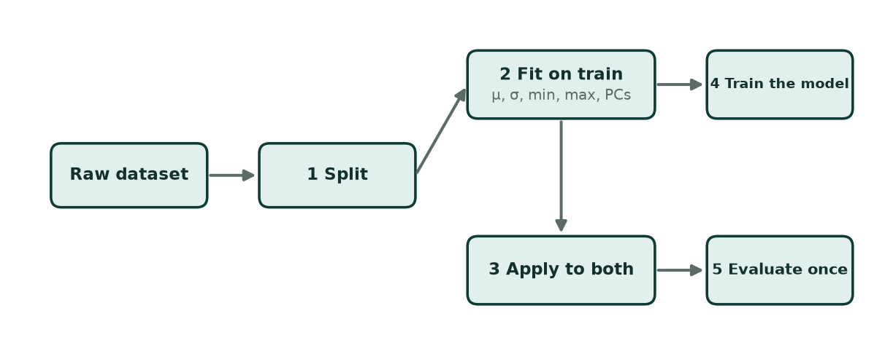
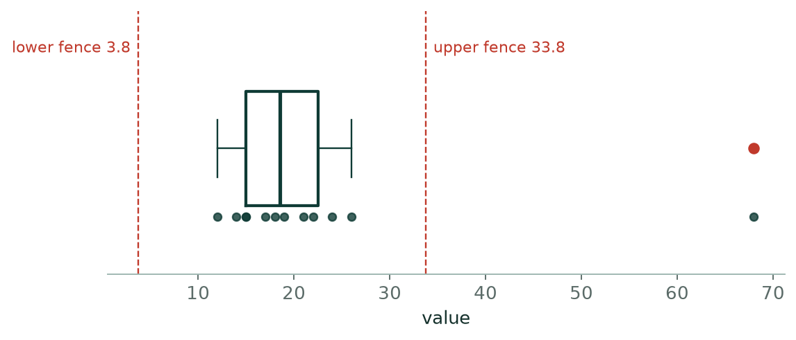
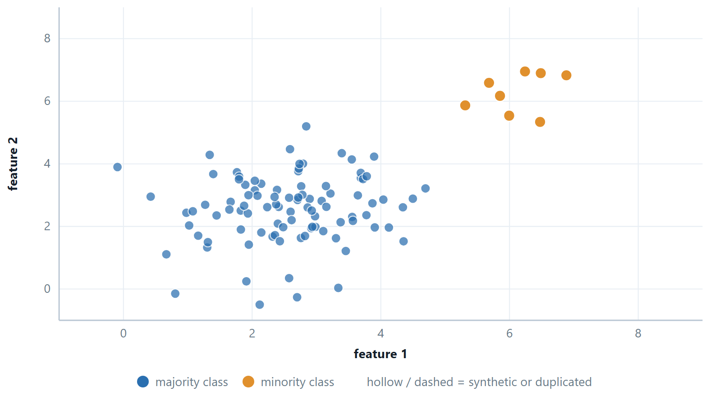

Chapter 2: Preparing the Data: Scaling, Encoding, Outliers and Balance¶
Suppose you are asked which two of three people are most alike, given their height in centimetres and their annual income in rupees. Person A is 170 cm earning ₹500 000; B is 195 cm earning ₹501 000; \(C\) is 171 cm earning ₹900 000. Any distance you compute is going to be dominated by the income difference, because income is measured in numbers that are thousands of times larger. The algorithm will report that A and B are practically identical and that \(C\) is far away — entirely because of the units somebody happened to choose. Change income to lakhs and the answer changes.
That is the whole motivation for feature scaling, and it generalises. Learning algorithms do arithmetic on the numbers you hand them. They cannot see that one column is a length and another is money. They cannot see that a 999 in the age column means “not recorded”, that three of your forty features are copies of each other, or that 99% of your rows belong to one class. Preprocessing is the work of making the numbers mean what you think they mean.
One more thing, which is the axis this whole unit turns on. Every step here learns something from the data — a minimum, a mean, a set of eigenvectors, a list of columns to keep. Anything learned must be learned from the training set alone. Break that and your reported accuracy becomes a number about your notebook rather than about the world.
Learning outcomes of Unit 2
- Apply min–max normalisation, z-score standardisation and robust scaling by hand, and say which one a given situation calls for — including the situations that call for none.
- State exactly which algorithms are sensitive to feature scale and why, rather than remembering a list.
- Detect outliers with the \(1.5 \times\) IQR rule and the z-score rule, explain why the two disagree, and decide what to do with what you find.
- Distinguish filter, wrapper and embedded feature selection, and choose between selection and extraction.
- Carry out PCA on a small covariance matrix: eigenvalues, eigenvectors, proportion of variance explained, and how many components to keep.
- Recognise class imbalance, explain the accuracy paradox, and compare undersampling, oversampling, SMOTE and class weights.
- Order a pipeline so that no information leaks from the test set into the training process.
2.1 Why raw data is rarely usable¶
Real datasets arrive with several distinct problems, and each has its own remedy. It is worth being able to name them separately, because the fixes are not interchangeable.
| Problem | What it looks like | Remedy |
|---|---|---|
| Incomparable scales | age in years next to income in rupees | scaling — this unit's first topic |
| Missing values | blanks, NaN, or a sentinel like −1 or 999 |
drop, impute, or flag as missing |
| Categorical text | “Mumbai”, “Delhi”, “Chennai” | one-hot, ordinal or target encoding |
| Outliers | one value ten times everything else | investigate; then keep, cap, or remove |
| Too many features | 200 columns, 300 rows | selection, or extraction with PCA |
| Redundant features | “height in cm” and “height in inches” | correlation filter, PCA, or a regulariser |
| Class imbalance | 99.7% negative | resampling, class weights, and a better metric |
| Skew | income, city population, word counts | log or Box–Cox transform |
Key idea
Preprocessing is not tidying-up done before the real work. It is part of the model. A scaler is fitted, has parameters, and must be shipped and versioned with the model — if the values used at prediction time differ from those used at training time, the model receives inputs in a coordinate system it has never seen, and its output is meaningless rather than merely inaccurate.
2.2 Feature scaling¶
Definition: The two workhorses
Min–max normalisation maps a feature onto a fixed interval, usually [0, 1]:
x′ \(= (x -\) min) / (max \(-\) min)
Z-score standardisation re-centres to mean 0 and rescales to standard deviation 1:
\(z = (x - \mu ) / \sigma\)
Mean normalisation is min–max recentred on the mean, so the values land in [−0.5, 0.5] with an average of zero:
x′ \(= (x - \mu ) /\) (max \(-\) min)
Min–max preserves the shape of the distribution exactly and guarantees the range; it is completely at the mercy of the extreme values, because they are the parameters. Standardisation is far more robust to a single large value: an outlier moves \(\mu\) a little and \(\sigma\) a little, rather than redefining the whole scale. But it bounds nothing, so a standardised feature can perfectly well take the value 12.

Which algorithms care, and why¶
Do not memorise a list — the reason predicts the list.
Scale-sensitive
Anything that computes a distance or a dot product, or descends a gradient. k-NN, k-means, SVM, PCA — because a distance is a sum over features and the biggest-numbered feature dominates the sum. Linear and logistic regression trained by gradient descent, and neural networks — because unequal scales make the cost surface a long thin ravine that gradient descent zig-zags down instead of walking straight to the bottom. Ridge and lasso — because the penalty \(\lambda \sum \theta ^{2}\) punishes a coefficient for being large, and a coefficient is large partly because its feature is measured in small units.
Scale-indifferent
Anything that considers one feature at a time and only compares values within that feature. Decision trees, random forests, gradient boosting — a split asks “is \(x <\) t?”, and any increasing transformation of \(x\) leaves the ordering, and hence every possible split, unchanged. Also naïve Bayes on categorical features, and linear regression solved by the normal equation, which finds the exact optimum regardless of conditioning.
Definition: Robust scaling and the log transform
Robust scaling replaces \(\mu\) and \(\sigma\) with the median and the IQR: x′ \(= (x -\) median) / IQR. Both are rank statistics, so an extreme value cannot drag them. Use it whenever the feature is heavy-tailed.
Log transform \(x \to \log(1 + x)\) is not scaling but reshaping: it pulls in a long right tail so that a variable like income or city population becomes roughly symmetric. Apply it before standardising, and only to positive quantities.

- Raw dataset. Everything you have. Nothing has been computed from it yet.
- 1 Split. FIRST. Before any statistic is computed from any row. Everything that follows depends on this ordering.
- 2 Fit on train (μ, σ, min, max, PCs). Every number the transformation needs is computed from the training rows only. scaler.fit(X_train).
- 3 Apply to both. scaler.transform(X_train) and scaler.transform(X_test) — the same stored numbers for both. The test set is transformed, never consulted.
- 4 Train the model. On the transformed training set.
- 5 Evaluate once. On the transformed test set, at the very end. This number is now an honest estimate.
Why fitting the scaler on everything is wrong, concretely
Suppose the test set happens to contain the largest salary in the dataset. If min and max were computed over all rows, that value defines the top of the scale, and the model has been trained in a coordinate system that only exists because of a row it was not supposed to see. The effect is usually small and always in the same direction: your reported score is better than the truth. It costs nothing to do it correctly — in scikit-learn, put the scaler and the model in a Pipeline and the correct order becomes automatic.
# scaling, done the only correct way: inside a pipeline
from sklearn.preprocessing import StandardScaler, MinMaxScaler, RobustScaler
from sklearn.pipeline import make_pipeline
from sklearn.model_selection import train_test_split, cross_val_score
# WRONG — the scaler has seen every row, the test rows included
X_all = StandardScaler().fit_transform(X)
X_tr, X_te, y_tr, y_te = train_test_split(X_all, y, random_state=42)
# RIGHT — split first; the pipeline refits the scaler inside every fold
X_tr, X_te, y_tr, y_te = train_test_split(X, y, random_state=42)
pipe = make_pipeline(StandardScaler(), model)
print(cross_val_score(pipe, X_tr, y_tr, cv=5).mean())
# the stored statistics — these must travel with the model to production
sc = StandardScaler().fit(X_tr)
print(sc.mean_, sc.scale_) # mu and sigma, learned from training data alone
The first version is not slower or uglier — it is wrong, and it will report a slightly better score than the model deserves. That is the whole reason Pipeline exists.
2.3 Missing values and categorical columns¶
Missing values¶
First find them, including the ones in disguise: a coded 999, a −1, an empty string, a zero in a column where zero is impossible. Then choose.
- Drop the rows — fine when few rows are affected and the missingness is unrelated to the target. Dangerous otherwise: if income is missing mainly for the unemployed, dropping those rows removes exactly the group you care about.
- Drop the column — when most of it is missing and the rest is not clearly informative.
- Impute — fill with the mean (symmetric numeric data), the median (skewed or with outliers), the mode (categorical), or a model-based value (k-NN imputation). Every one of these is a statistic, so compute it on the training fold and reuse it.
- Flag it — add a binary
was_missingcolumn. Often the fact of absence carries real information, and this keeps it while still letting you fill the value.
Encoding categories¶
| Method | What it does | Use when | Risk |
|---|---|---|---|
| One-hot | one binary column per value | unordered categories, few values | column explosion with high-cardinality features |
| Dummy (drop one) | \(c - 1\) columns | linear and logistic regression | none; avoids the dummy-variable trap |
| Ordinal | map to 0, 1, 2 … in order | genuinely ordered: low \(<\) medium \(<\) high | invents an order where there is none |
| Label | arbitrary integers | the target of a classifier | never use on an unordered input feature |
The mistake worth naming: encoding city as Mumbai \(= 0\), Delhi \(= 1\), Chennai \(= 2\), Kolkata \(= 3\) tells a linear model that Kolkata is three times Delhi and that Delhi sits between Mumbai and Chennai. The model will happily act on that fiction. A decision tree suffers less, because it can carve the integers into arbitrary groups, but it still has to spend splits doing so.
2.4 Outliers: finding them, and deciding what they are¶
An outlier is a value far from the rest. That is a statement about the data, not about the truth. It might be a typo — a weight of 700 kg. It might be a real, rare case — a genuine ₹5-crore transaction. Or it might be the very thing you are trying to detect, as in fraud or fault detection, where the outliers are the signal and everything else is background. Detection is arithmetic; deciding what to do is judgement.
Definition: IQR and z-score
Tukey's rule. With quartiles Q1 and Q3 and IQR \(= Q3 - Q1\), flag any value outside [\(Q1 -\) 1.5·IQR, \(Q3 +\) 1.5·IQR]. Values beyond 3·IQR are “far out”.
Z-score rule. Flag any value with |z| \(=\) |x \(- \mu |/\sigma > 3\).
The two disagree, and the disagreement is instructive. Quartiles are computed from ranks, so no single monstrous value can move them. But \(\mu\) and \(\sigma\) are computed from the values themselves, so a large outlier inflates \(\sigma\) — and then hides inside the wider band it created. This is called masking, and it is why the IQR rule catches things the z-rule misses.

What to do with one you have found
Investigate first — a negative age is an error, a ₹5-crore transaction may be real. Correct if it is an error you can fix. Cap (winsorise) at the 1st and 99th percentile to limit its influence without discarding the row. Remove only when you are confident it is not a real case. Or keep it and use a robust method — median instead of mean, MAE instead of MSE, a tree instead of a linear model. Removing points because they are inconvenient is how you end up with a model that fails precisely on the cases that matter.
2.5 Class balancing¶

The accuracy paradox
With 99.7% negatives, the model that answers “negative” for every input scores 99.7% accuracy and detects nothing. Any real classifier that finds some positives at the cost of a few false alarms will score lower on accuracy — so optimising accuracy actively pushes you towards the useless model. Report precision, recall, F1 and the confusion matrix instead, and always quote the majority-class baseline next to whatever number you claim.
| Remedy | What it does | Cost |
|---|---|---|
| Random undersampling | discard majority examples until balanced | throws away real information; only viable when the majority class is huge |
| Random oversampling | duplicate minority examples | no new information; a flexible model memorises the repeats |
| SMOTE | synthesise new minority points along lines joining nearest neighbours | plausible but invented; can blur the boundary if the classes overlap |
| Class weights | tell the loss function that a minority mistake costs more | none — usually the first thing to try, and it changes no data at all |
| Move the threshold | keep the model, lower the cut-off for “positive” | none; often the whole solution, since the model already ranks correctly |
Resample the training fold only
SMOTE applied before the split puts synthetic points built from training data into the test set, so the model is graded on near-copies of what it studied. Recall will look wonderful and will collapse in production. Test sets keep the real, imbalanced distribution — that is what the world looks like.
# class imbalance: try the cheapest remedy first
from sklearn.linear_model import LogisticRegression
# 1. costs nothing and changes no data: tell the loss a rare mistake costs more
clf = LogisticRegression(class_weight="balanced").fit(X_tr, y_tr)
# 2. resampling — inside the training fold only, never before the split
from imblearn.over_sampling import SMOTE # pip install imbalanced-learn
from imblearn.pipeline import make_pipeline as imb_pipeline
pipe = imb_pipeline(StandardScaler(), SMOTE(random_state=42), LogisticRegression())
print(cross_val_score(pipe, X_tr, y_tr, cv=5, scoring="f1").mean())
Note the import
imblearn's pipeline, not sklearn's — because a resampler must act on the training fold and be skipped when the fold is scored, and only imblearn's version knows that. Using sklearn's pipeline with SMOTE resamples the validation fold too, which is the same leak in a different costume. And scoring="f1", not accuracy: that is the whole reason you are resampling.
2.6 Further topics¶
Scaling to any interval¶
Min–max normalisation is usually quoted for the interval \([0, 1]\), but the same idea maps a feature onto any chosen interval \([a, b]\):
For \(a = 0\) and \(b = 1\) this is the formula already given. Many neural networks work best with inputs centred on zero, so \([-1, 1]\) is a common choice: for the column \(10, 20, 30, 40, 50\) the formula gives \(x' = -1 + (x - 10)(2)/40\), that is \(-1, -0.5, 0, 0.5, 1\). Image pixels, which lie between 0 and 255, are the standard case: dividing by 255 gives \([0, 1]\), and \(2x/255 - 1\) gives \([-1, 1]\). As always, \(\min\) and \(\max\) are the training-set values (or, for pixels, the known limits of the measurement), and a later value outside them simply lands outside the interval.
Target encoding, and the leak it invites¶
One-hot encoding fails when a feature has hundreds or thousands of values (a postcode, a shop identifier): the number of columns explodes. Target (or count) encoding replaces each category by a summary of the target for that category, most simply the mean of \(y\) over the training rows that have it. It turns one high-cardinality column into one numeric column, at a price: the encoding is computed from the labels, so it is the one preprocessing step in which the answer itself is used.
| city | rows in training | defaults (\(y = 1\)) | mean of \(y\) |
|---|---|---|---|
| Delhi | 4 | 3 | \(0.75\) |
| Mumbai | 3 | 1 | \(0.33\) |
| Chennai | 1 | 1 | \(1.00\) |
The overall default rate is \(5/8 = 0.625\). Notice Chennai: one row, one default, so the encoded value is \(1.00\) and the feature reproduces that row's label exactly. For a rare category the mean is mostly noise, yet it looks like a strong predictor, and a flexible model will use it to memorise the training set. Two safeguards are standard. Smooth towards the overall rate: with a weight \(m\) (here \(m = 2\)),
which gives Delhi \(0.708\), Mumbai \(0.45\) and Chennai \(0.75\); the single-row category is pulled most strongly towards the overall rate. And compute the encoding out of fold: each training row is encoded using only the other folds, so that its own label never feeds into its own feature. Like every learned transformation, the encoding must be fitted on the training part only and applied unchanged to the test part, with a category unseen in training given the overall rate.
2.7 Worked examples¶
The examples below work through the calculations of this chapter in full. Try each one on paper before reading the steps.
Example 2.1: Scale a feature, then scale a new value
Problem. Training salaries (₹ thousand) are 20, 35, 40, 55, 100. Standardise them using the population \(\sigma\). A test example arrives with salary 70 — give its z-score. Then give the min–max value of the same test example.
Step 1 — training statistics, from training data only
\(\mu = (20 + 35 + 40 + 55 + 100)/5 = 250/5 = 50\)
deviations: −30, −15, −10, 5, 50; squares: 900, 225, 100, 25, 2500; sum 3750
\(\sigma = \sqrt{3750/5} = \sqrt{750} = 27.386\)
Step 2 — the training set, transformed
\(z = (-30, -15, -10, 5, 50)/27.386 = (-1.095, -0.548, -0.365, 0.183, 1.826)\)
Check: these sum to 0, as standardised values must.
Step 3 — the test example
\(z = (70 - 50)/27.386 = 0.730\). The stored \(\mu\) and \(\sigma\) are used; the test value takes no part in computing them.
Step 4 — min–max, for contrast
min \(= 20\), max \(= 100\) from the training set, so x′ \(= (70 - 20)/(100 - 20) = 50/80 = 0.625\).
Now notice what happens with a test salary of 120: x′ \(= (120 - 20)/80 = 1.25\), outside [0, 1]. That is not a mistake — it is min–max being honest about a value beyond the training range, and it is exactly why min–max is fragile when the future is larger than the past.
Answer. \(z = 0.730\); min–max \(= 0.625\)
Example 2.2: The two outlier rules disagree
Problem. Values: 10, 12, 13, 14, 15, 16, 18, 95. Apply the \(1.5 \times\) IQR rule and the |z| \(> 3\) rule, and explain the disagreement.
Step 1 — the IQR rule
Sorted, \(n = 8\). With linear interpolation, \(Q1 = 12.75, Q3 = 16.5\), IQR \(= 3.75\).
Fences: \(12.75 - 1.5(3.75) = 7.125\) and \(16.5 + 1.5(3.75) = 22.125\).
\(95 > 22.125\), so the IQR rule flags 95.
Step 2 — the z-score rule
\(\mu = (10+12+13+14+15+16+18+95)/8 = 193/8 = 24.125\)
Squared deviations sum to \(5782.9\), so \(\sigma = \sqrt{5782.9/8} = \sqrt{722.9} \approx 26.89\).
\(z\) for \(95 = (95 - 24.125)/26.89 = 2.64\), which is less than 3. The z-rule does not flag it.
Step 3 — why
The outlier is inside both statistics it is being tested against. It pulled \(\mu\) up from about 14 to 24, and it inflated \(\sigma\) from about 2.4 to 27 — more than ten times. Having widened its own goalposts, it now sits comfortably inside them. This is masking.
The quartiles cannot be moved this way, because they depend on the ranks of the values, not their sizes. Replace 95 by 950 and Q1, Q3 and the fences do not change at all.
Answer. IQR flags 95; the z-rule does not, because 95 inflated \(\sigma\) to 26.9 and so hid inside its own band. Prefer the IQR rule, or use a robust \(z\) built on the median and MAD.
Example 2.3: Order a pipeline correctly
Problem. You have 1 000 rows, 30 features, 4% positives, some missing values and features on wildly different scales. Write the correct order of operations and say what would go wrong if the split came last.
The order
-
Split — stratified, so both parts keep the 4% positive rate. Nothing has been computed from any row yet.
-
Impute — medians computed on the training fold, then applied to both.
-
Encode categories — the category list comes from the training fold; an unseen category in the test set maps to all zeros.
-
Scale — \(\mu\) and \(\sigma\) from the training fold.
-
Select or reduce — correlation filter or PCA fitted on the training fold.
-
Balance — SMOTE or class weights, applied to the training fold only. The test set keeps the real 4%.
-
Train, tuning hyper-parameters by cross-validation inside the training fold.
-
Evaluate once on the test set, using precision, recall and F1 rather than accuracy.
What goes wrong if the split comes last
Every statistic — medians, \(\mu , \sigma\), the correlation ranking, the principal components — has then been computed with the test rows included, so the test set has influenced the model without being used to train it. The reported score is optimistic and there is no way to say by how much.
With SMOTE the damage is worse and easy to see: synthetic points are built by interpolating between real minority points. If that happens before the split, a synthetic point in the test set may be a near-copy of a real training point. Recall on the test set can approach 1.0 and mean nothing at all.
Answer. Split \(\to\) impute \(\to\) encode \(\to\) scale \(\to\) select/reduce \(\to\) balance (train only) \(\to\) train \(\to\) evaluate once.
Example 2.4: Scaling can change which point is nearest
Problem. A model uses salary (range ₹20 000 to ₹200 000 in the data) and age (range 20 to 60 years). A query person has salary ₹50 000 and age 30. Candidate P has salary ₹50 100 and age 55; candidate Q has salary ₹60 000 and age 30. Which candidate is nearer to the query by Euclidean distance (i) on the raw numbers, and (ii) after min–max scaling each feature to \([0, 1]\) using the stated ranges?
Step 1 — the raw differences
P: \(\Delta \text{salary} = 100\), \(\Delta \text{age} = 25\). Q: \(\Delta \text{salary} = 10\,000\), \(\Delta \text{age} = 0\).
Step 2 — raw distances
\(d(P) = \sqrt{100^{2} + 25^{2}} = \sqrt{10\,625} = 103.1\)
\(d(Q) = \sqrt{10\,000^{2} + 0^{2}} = 10\,000\)
On the raw numbers P is nearer by a factor of about 100. The 25-year age gap is invisible because it is added to a salary gap measured in the tens of thousands.
Step 3 — scale each difference by the feature's range
A min–max-scaled difference is the raw difference divided by the range. The salary range is \(200\,000 - 20\,000 = 180\,000\) and the age range is \(60 - 20 = 40\).
P: \(\Delta \text{salary}' = 100/180\,000 = 0.00056\), \(\Delta \text{age}' = 25/40 = 0.625\)
Q: \(\Delta \text{salary}' = 10\,000/180\,000 = 0.0556\), \(\Delta \text{age}' = 0/40 = 0\)
Step 4 — scaled distances
\(d(P) = \sqrt{0.00056^{2} + 0.625^{2}} = 0.625\)
\(d(Q) = \sqrt{0.0556^{2} + 0} = 0.0556\)
After scaling Q is nearer, by a factor of more than 11.
Answer. Raw: P is nearer (\(103.1\) against \(10\,000\)). Scaled: Q is nearer (\(0.0556\) against \(0.625\)). The nearest neighbour reverses.
Comment. Neither answer is "true" in the abstract; the point is that the raw answer is decided by the units. Someone 25 years older is a large difference in age terms, someone ₹10 000 richer is a small difference in salary terms, and scaling lets the distance reflect that. A k-NN classifier would have used different neighbours, and so made different predictions, with and without scaling.
Example 2.5: Four ways to rescale one skewed column
Problem. Household wealth (₹ lakh) in a small sample is \(8, 10, 12, 15, 18, 400\). Rescale the column by (i) min–max, (ii) z-score with the population \(\sigma\), (iii) robust scaling \((x - \text{median})/\text{IQR}\), and (iv) the transform \(\ln (1 + x)\). Compare how well each one separates the five ordinary values.
Step 1 — min–max
\(\min = 8\), \(\max = 400\), range \(= 392\), so \(x' = (x - 8)/392\):
\(0,\ 0.0051,\ 0.0102,\ 0.0179,\ 0.0255,\ 1\)
The five ordinary households are squeezed into an interval of width \(0.0255\), a fortieth of the scale.
Step 2 — z-score
\(\mu = (8 + 10 + 12 + 15 + 18 + 400)/6 = 463/6 = 77.17\)
The squared deviations are \(4784.0, 4511.4, 4246.7, 3864.7, 3500.7, 104\,221.4\), which sum to \(125\,128.8\).
\(\sigma = \sqrt{125\,128.8/6} = \sqrt{20\,854.8} = 144.41\)
\(z = (-0.479,\ -0.465,\ -0.451,\ -0.431,\ -0.410,\ 2.236)\)
The outlier has inflated both \(\mu\) and \(\sigma\); the five ordinary values now sit within \(0.07\) of each other.
Step 3 — robust scaling
Sorted, with linear interpolation: the median is \((12 + 15)/2 = 13.5\); \(Q1\) is at position \(0.25 \times 5 = 1.25\), so \(Q1 = 10 + 0.25(12 - 10) = 10.5\); \(Q3\) is at position \(3.75\), so \(Q3 = 15 + 0.75(18 - 15) = 17.25\). \(\text{IQR} = 17.25 - 10.5 = 6.75\).
\(x' = (x - 13.5)/6.75 = (-0.815,\ -0.519,\ -0.222,\ 0.222,\ 0.667,\ 57.26)\)
The ordinary values now cover a range of \(1.48\) and are easy to tell apart. The outlier is still extreme, which is honest: it is.
Step 4 — the log transform
\(\ln (1 + x) = (2.197,\ 2.398,\ 2.565,\ 2.773,\ 2.944,\ 5.994)\)
The ordinary values span \(0.75\), and the outlier is now only \(3.05\) above the largest of them instead of \(382\). The ratio of one household to another has become a difference, which is what a long right tail needs.
Answer.
| Method | Width covered by the five ordinary values | Outlier |
|---|---|---|
| min–max | \(0.026\) | \(1.00\) |
| z-score | \(0.07\) | \(2.24\) |
| robust | \(1.48\) | \(57.3\) |
| \(\ln (1 + x)\) | \(0.75\) | \(5.99\) |
Comment. Min–max and z-score are both linear maps, so neither can change the shape of the data: a skewed column is still skewed after both. Only robust scaling, which takes its centre and its scale from rank statistics, and the log transform, which is nonlinear, deal with the outlier. In practice take the log first and then standardise. Note also a general fact about the z-score: with the population \(\sigma\), no value in a sample of \(n\) can have \(|z|\) larger than \(\sqrt{n - 1}\) (here \(\sqrt{5} = 2.236\), and the outlier reaches \(2.2355\)). For \(n \le 10\) the rule "\(|z| > 3\)" can therefore never flag anything.
Example 2.6: Impute, then scale, using training statistics only
Problem. A numeric training column has the observed values \(4, 6, 8, 10, 12\) and one missing entry. Two test examples arrive: one with the value missing, and one with the value \(14\). Fill the missing entries by the mean, standardise with the population \(\sigma\), and give the processed values of both test examples.
Step 1 — the imputation value, from the training column only
Mean of the observed training values: \((4 + 6 + 8 + 10 + 12)/5 = 40/5 = 8\). The missing training entry becomes \(8\), and so will every missing entry in the test data. The test examples take no part in computing it, and the target \(y\) is not used.
Step 2 — the training column after imputation
\(4, 6, 8, 10, 12, 8\). Its mean is \(48/6 = 8\), unchanged, because we filled with the mean.
Step 3 — the scaler, fitted on this filled training column
Squared deviations from 8: \(16, 4, 0, 4, 16, 0\); sum \(= 40\).
\(\sigma = \sqrt{40/6} = \sqrt{6.667} = 2.582\)
The training column becomes \((-1.549,\ -0.775,\ 0,\ 0.775,\ 1.549,\ 0)\).
Step 4 — transform the two test examples with the stored numbers
Test example with the value missing: filled with \(8\), then \(z = (8 - 8)/2.582 = 0\).
Test example with the value \(14\): \(z = (14 - 8)/2.582 = 2.324\).
Answer. The imputation value is \(8\); \(\mu = 8\) and \(\sigma = 2.582\). The processed test values are \(0\) (the missing entry) and \(2.324\) (the value 14).
Comment. Two things to notice. First, mean imputation followed by standardisation maps every filled entry to exactly \(0\), the centre of the scale: the model sees "average" for every unknown, which is why a separate was-missing indicator is worth adding when missingness may mean something. Second, imputation shrinks the spread: the five observed values alone have \(\sigma = \sqrt{40/5} = 2.828\), against \(2.582\) after filling. The order impute-then-scale, both on the training fold, is the order of the pipeline set out earlier in this chapter.
Example 2.7: Why integer codes for a city mislead, in numbers
Problem. A feature city takes the values Delhi, Mumbai and Chennai, and is fed to a distance-based model. Compare the distances between the cities when they are coded \(\text{Delhi} = 0\), \(\text{Mumbai} = 1\), \(\text{Chennai} = 2\) and when they are one-hot encoded.
Step 1 — the integer code
The distance between two cities is the absolute difference of the codes:
| Pair | \(\lvert \text{difference} \rvert\) |
|---|---|
| Delhi, Mumbai | \(\lvert 0 - 1 \rvert = 1\) |
| Mumbai, Chennai | \(\lvert 1 - 2 \rvert = 1\) |
| Delhi, Chennai | \(\lvert 0 - 2 \rvert = 2\) |
The code says Delhi and Chennai are twice as far apart as any other pair, and that Mumbai lies between them. None of this is a fact about cities; it came from the order in which someone wrote the names.
Step 2 — the one-hot code
Delhi \(= (1, 0, 0)\), Mumbai \(= (0, 1, 0)\), Chennai \(= (0, 0, 1)\). Any two different cities differ in exactly two positions, by \(1\) in each:
\(d = \sqrt{1^{2} + 1^{2}} = \sqrt{2} = 1.414\)
for every pair.
Step 3 — count the columns
One-hot encoding turns one column into \(c = 3\) columns. A linear model with an intercept needs only \(c - 1 = 2\) of them (Delhi is then the case where both are zero), otherwise the three indicator columns add up to the intercept column and the design matrix is singular.
Answer. Integer code: distances \(1, 1, 2\), a made-up order and spacing. One-hot: all three distances equal \(\sqrt{2}\), so no city is closer to another. A linear model needs \(c - 1 = 2\) indicator columns.
Comment. Label coding is correct for a genuinely ordered feature (low \(<\) medium \(<\) high), and for the target of a classifier. It is wrong for an unordered input of a distance-based or linear model.
Example 2.8: The accuracy paradox, class weights and one SMOTE point
Problem. A data set has 1 000 rows, of which 40 (4%) are positive. (i) A model that always answers "negative" is compared with one whose confusion counts are \(TP = 30, FN = 10, FP = 60, TN = 900\). Compute accuracy, precision, recall and \(F_{1}\) for each. (ii) Compute the "balanced" class weights \(w_{c} = n/(k\, n_{c})\) for \(k = 2\) classes. (iii) Generate one synthetic minority point by SMOTE from the minority points \(a = (2, 4)\) and \(b = (5, 8)\) with the interpolation fraction \(\lambda = 0.25\).
Step 1 — the always-negative model
It is right on all 960 negatives and wrong on all 40 positives: \(TP = 0, FN = 40, FP = 0, TN = 960\).
Accuracy \(= 960/1000 = 96\%\). Recall \(= 0/40 = 0\). Precision \(= 0/0\), undefined. \(F_{1} = 0\).
Step 2 — the real classifier
Check the counts: positives \(= 30 + 10 = 40\), negatives \(= 60 + 900 = 960\).
Accuracy \(= (30 + 900)/1000 = 93\%\)
Precision \(= 30/(30 + 60) = 0.333\)
Recall \(= 30/(30 + 10) = 0.75\)
\(F_{1} = 2 \times 0.333 \times 0.75/(0.333 + 0.75) = 0.462\)
The useless model beats the useful one on accuracy (\(96\%\) against \(93\%\)). That is the accuracy paradox: optimising accuracy pushes you towards doing nothing.
Step 3 — class weights
\(w_{\text{positive}} = 1000/(2 \times 40) = 12.5\)
\(w_{\text{negative}} = 1000/(2 \times 960) = 0.521\)
Total weight on the positives is \(40 \times 12.5 = 500\) and on the negatives \(960 \times 0.521 = 500\): the two classes now carry equal total weight in the loss, so a missed positive costs \(12.5/0.521 = 24\) times as much as a false alarm.
Step 4 — one SMOTE point
SMOTE places a new point on the line segment between a minority point and one of its minority neighbours:
\(\text{new} = a + \lambda (b - a) = (2, 4) + 0.25\,(3, 4) = (2.75,\ 5)\)
With \(\lambda = 0.5\) the point would be the midpoint \((3.5, 6)\). It is a plausible but invented example; it is built only from training-fold points, which is why SMOTE must be applied after the split.
Answer. Always-negative: accuracy \(96\%\), recall \(0\), precision undefined. Real classifier: accuracy \(93\%\), precision \(0.333\), recall \(0.75\), \(F_{1} = 0.462\). Weights: \(12.5\) and \(0.521\). SMOTE point: \((2.75, 5)\).
Comment. The real classifier still raises two false alarms for every true positive found (precision \(1/3\)); whether that is acceptable depends on the cost of a miss, which is a question about the application and not about the statistics. Moving the decision threshold changes the balance between precision and recall without changing the model (Chapter 12).
2.8 Common mistakes to avoid¶
Each of the following is a mistake that costs marks in an examination or accuracy in practice.
- Do not fit a scaler, imputer, encoder, selector or PCA on the whole dataset. Fit on the training fold; apply the stored numbers everywhere else.
- Do not use the sample standard deviation when the question says population, or the other way round. With \(n = 5\) the difference is over 10%, and examiners choose small \(n\) deliberately.
- Do not scale a decision tree's inputs and expect anything to change. It cannot, because splits depend only on order.
- Do not label-encode an unordered category for a linear model. It manufactures an order and a spacing, and the model will use both.
- Do not keep all \(c\) one-hot columns alongside an intercept in a linear model — the design matrix becomes singular. Drop one.
- Do not apply SMOTE, or any resampling, before splitting.
- Do not delete outliers because they are inconvenient. Investigate first; sometimes they are the only rows that matter.
- Do not report accuracy on imbalanced data without the majority-class baseline beside it.
2.9 Summary¶
After working through this chapter you should be able to do the following.
- Scale a feature three ways, and justify the choice from the shape of the data and the algorithm downstream. Min–max when a bounded range is needed and the tails are tame. Z-score as the default for anything distance- or gradient-based. Robust scaling when a few extreme values would otherwise define the scale. And nothing at all for trees.
- Say why each algorithm is or is not scale-sensitive — distances and dot products sum over features, so the largest-numbered feature dominates; splits compare values within a single feature, so any monotone rescaling is invisible to them.
- Find outliers with both standard rules, explain masking — an outlier inflating \(\sigma\) until it hides inside its own band — and choose sensibly between investigating, capping, removing, and switching to a robust method.
- Recognise the accuracy paradox on sight, compare the four remedies for imbalance, and explain why resampling belongs inside the training fold.
- Above all, order a pipeline so that nothing the model saw during training was computed with help from the test set — which is the difference between a score that predicts production and a score that does not.
2.10 Exercises¶
-
Values 4, 8, 15, 16, 23, 42. Give the min–max and z-score transforms of 15, using the population \(\sigma\).
Answer
Min–max: \(\min = 4\), \(\max = 42\), so \(x' = (15 - 4)/(42 - 4) = 11/38 = 0.2895\).
Z-score: \(\mu = (4 + 8 + 15 + 16 + 23 + 42)/6 = 108/6 = 18\). The deviations are \(-14, -10, -3, -2, 5, 24\), with squares \(196, 100, 9, 4, 25, 576\) summing to \(910\). So \(\sigma = \sqrt{910/6} = \sqrt{151.67} = 12.315\) and \(z = (15 - 18)/12.315 = -0.2436\).
(With the sample \(\sigma\), which divides by \(5\), one gets \(\sigma = 13.49\) and \(z = -0.222\), so say which you use.)
-
A feature has \(\mu = 60, \sigma = 12\) in training. A test example has value 96. Give its z-score, and say whether the \(|z| > 3\) rule flags it.
Answer
\(z = (96 - 60)/12 = 36/12 = 3.0\). The rule flags values with \(|z|\) strictly greater than 3, and \(3.0\) is not greater than \(3\), so the example is not flagged: it sits exactly on the boundary. The threshold is a convention rather than a law, so a value on it deserves a look at the raw record before being kept or removed. Note also that \(\mu\) and \(\sigma\) are the stored training values; the test example takes no part in computing them.
-
A dataset has 6 numeric columns and categorical columns with 4, 3 and 10 values. Give the column count after plain one-hot and after dropping one level per block.
Answer
Plain one-hot: \(6 + 4 + 3 + 10 = 23\) columns. Dropping one level from each of the three blocks (dummy encoding) removes three columns: \(6 + 3 + 2 + 9 = 20\). Dropping one level is needed for a linear model with an intercept, because the indicators of one feature add up to a column of ones, and so duplicate the intercept; tree-based and distance-based models do not need it.
-
Explain in three sentences why k-NN needs scaling and a decision tree does not.
Answer
k-NN ranks examples by a distance that is a sum over all features, so a feature measured in large numbers (salary in rupees) dominates the sum and a feature measured in small numbers (age in years) is ignored, purely because of the units; scaling puts the features on a common footing. A decision tree considers one feature at a time and only asks whether its value is below a threshold, a question that depends on the order of the values within that feature. Any increasing rescaling leaves that order unchanged, so every possible split, and therefore the tree, is the same whatever the units.
-
A colleague reports 99.2% accuracy on a fraud dataset with 0.8% fraud. What is the first question you ask, and what should they report instead?
Answer
First question: what accuracy does a model that always answers "not fraud" get? The answer is \(100\% - 0.8\% = 99.2\%\), exactly the figure reported, so the model may have learned nothing. Ask for the confusion matrix on a test set that keeps the real class proportions. They should report precision (of the transactions flagged, how many were fraud), recall (of the frauds, how many were caught) and \(F_{1}\) or the area under the ROC or precision–recall curve, always quoting the majority-class baseline beside any accuracy.
-
Values 5, 7, 8, 8, 9, 10, 11, 40. Apply both outlier rules and explain any disagreement.
Answer
IQR rule (linear interpolation, \(n = 8\)): \(Q1 = 7.75\), \(Q3 = 10.25\), \(\text{IQR} = 2.5\). The fences are \(7.75 - 1.5(2.5) = 4.0\) and \(10.25 + 1.5(2.5) = 14.0\). The value \(40\) lies above \(14.0\) and is flagged; \(5\) is inside the fences.
z-score rule: \(\mu = 98/8 = 12.25\). The squared deviations sum to \(903.5\), so \(\sigma = \sqrt{903.5/8} = 10.627\), and for the value \(40\), \(z = (40 - 12.25)/10.627 = 2.61\). That is below \(3\), so the z-rule does not flag it.
The rules disagree because \(40\) is part of the data used to compute \(\mu\) and \(\sigma\): it pulled the mean from \(8.3\) up to \(12.25\) and inflated the standard deviation from about \(1.8\) to \(10.6\), so it hides inside the band it created (masking). Quartiles depend on ranks, not sizes, so they are unmoved. In fact, with the population \(\sigma\) no value in a sample of 8 can have \(|z|\) above \(\sqrt{7} = 2.65\), so the z-rule with threshold 3 could never flag anything here.
-
Why is applying SMOTE before the train/test split worse than applying plain oversampling before the split? (Both are wrong; say why one is more deceptive.)
Answer
Both leak training information into the test set, but in different ways. Plain oversampling duplicates existing minority rows, so after a random split some test rows are exact copies of training rows; the leak is large but can be found, because a check for duplicate rows across the two sets reveals it. SMOTE manufactures new points by interpolating between real minority points, so a synthetic point in the test set lies between, and very close to, real training points while being an exact copy of none of them. No duplicate-row check finds it, yet the model is being graded on near-copies of what it studied, and recall looks excellent. Both must be done on the training part alone, after the split, with the test set left at its real class balance.
-
Standardise the data \(2, 4, 11, 23, 27, 29\) (use the population standard deviation).
Answer
\(\mu = (2 + 4 + 11 + 23 + 27 + 29)/6 = 96/6 = 16\). The deviations are \(-14, -12, -5, 7, 11, 13\), with squares \(196, 144, 25, 49, 121, 169\) summing to \(704\). So \(\sigma = \sqrt{704/6} = \sqrt{117.33} = 10.832\).
\(z = (-1.292,\ -1.108,\ -0.462,\ 0.646,\ 1.016,\ 1.200)\)
Check: the \(z\) values sum to \(0\) (to rounding). With the sample \(\sigma = \sqrt{704/5} = 11.866\) the values would be \((-1.180, -1.011, -0.421, 0.590, 0.927, 1.096)\); the method is the same, and the two conventions should not be mixed.
-
The training values of a feature are \(4, 8, 12, 16, 20\). (a) Min–max normalise them to \([0, 1]\) and standardise them (population \(\sigma\)). (b) A test value of \(24\) arrives: what are its min–max and z-score values? (c) Why can the min–max value exceed 1, and why is that correct rather than a bug?
Answer
(a) \(\min = 4\), \(\max = 20\): \(x' = (x - 4)/16 = 0, 0.25, 0.5, 0.75, 1\). Also \(\mu = 12\) and the squared deviations are \(64, 16, 0, 16, 64\), summing to \(160\), so \(\sigma = \sqrt{160/5} = \sqrt{32} = 5.657\) and \(z = -1.414, -0.707, 0, 0.707, 1.414\).
(b) Using the training statistics: min–max \(= (24 - 4)/16 = 1.25\); z-score \(= (24 - 12)/5.657 = 2.121\).
(c) \(\min\) and \(\max\) are learned from the training set only, and a new value beyond that range simply lies outside the interval the training data defined. The value \(1.25\) honestly says "25% beyond the largest value seen". Recomputing the minimum and maximum with the test value included would let the test set influence the scaler. Clipping to \([0, 1]\) is an option, not a requirement.
-
State whether you would prefer min–max normalisation, z-score standardisation or robust scaling, with a one-line reason, for (a) pixel intensities fed to a neural network; (b) household wealth, a strongly outlier-prone feature; (c) the inputs to PCA; (d) a percentage already bounded in \([0, 100]\).
Answer
(a) Min–max: pixel values already lie in a known fixed range (for example 0 to 255) and have no outliers, and a bounded input suits many network activations. (b) Robust scaling, possibly after a log transform: a few huge values would define the minimum and maximum, and would inflate \(\mu\) and \(\sigma\), whereas the median and IQR are unmoved by them. (c) Z-score: PCA maximises variance, which depends on units, and it assumes centred data; standardising gives every feature unit variance, so that PC1 reflects relationships and not the largest-numbered column. (d) Min–max (in effect, divide by 100): the range is known in advance and the feature is already bounded, so no statistics need to be learned from the data at all.
-
A student writes:
scaler = StandardScaler() X_all = scaler.fit_transform(X) # scale everything X_tr, X_te, y_tr, y_te = train_test_split(X_all, y) model.fit(X_tr, y_tr) print(model.score(X_te, y_te)) # 96% accuracy!Identify the bug, say how it leaks information, rewrite it correctly, and give the argument from deployment for why "fit on the training data only" is the only workable rule.
Answer
Bug:
fit_transformcomputes \(\mu\) and \(\sigma\) from every row, test rows included, before the split. The test set has therefore influenced the numbers used to prepare the training data, so it is no longer truly unseen and the 96% is optimistically biased.Correct version:
X_tr, X_te, y_tr, y_te = train_test_split(X, y, random_state=42) scaler = StandardScaler().fit(X_tr) # statistics from training rows only model.fit(scaler.transform(X_tr), y_tr) print(model.score(scaler.transform(X_te), y_te))or, better,
make_pipeline(StandardScaler(), model), which refits the scaler inside every cross-validation fold.The deployment argument: a deployed model sees one new customer at a time. It cannot compute the mean or the minimum of future data, which does not yet exist, so the only statistics available to it are those stored from the training data. An evaluation that used anything else would measure a pipeline that cannot be run in production.
-
A feature is strongly right-skewed (a long tail of large values). (a) Why does min–max scaling alone not fix this? (b) Name one transformation that would reduce the skew and say where it belongs in the pipeline relative to scaling.
Answer
(a) Min–max scaling is a linear map: it shifts and stretches the axis but cannot bend it, so a skewed column stays skewed and the long tail merely lands near 1, with the bulk of the values squeezed near 0 (as in a column with one huge value). (b) A nonlinear transform pulls the tail in: \(\ln (1 + x)\) (or a square root) for non-negative quantities such as income or word counts. Apply it before scaling, so that the scaler sees the reshaped values; and, like any learned step, any parameters (a shift, say) must come from the training data only.
-
A classification dataset has 100 examples of class A and 50 of class B. A stratified 80/20 split is wanted. Which of these train/test splits is appropriate: S1 train \(\{A: 80, B: 30\}\), test \(\{A: 20, B: 20\}\); S2 train \(\{A: 20, B: 20\}\), test \(\{A: 80, B: 30\}\); S3 train \(\{A: 80, B: 40\}\), test \(\{A: 20, B: 10\}\); S4 train \(\{A: 20, B: 10\}\), test \(\{A: 80, B: 40\}\)?
Answer
The classes are in the ratio \(A : B = 100 : 50 = 2 : 1\), and a stratified split keeps that ratio in both parts. S3 does (\(80 : 40\) and \(20 : 10\)), and its sizes (\(120\) for training, \(30\) for testing) are the requested \(80/20\). S1 does not: class B is split \(30 : 20\) (\(60\%\) to training) while class A is split \(80 : 20\), so the two parts have different class proportions. S2 does not either, and it trains on the smaller part. S4 does preserve the \(2 : 1\) ratio, but with only \(30\) examples in training and \(120\) in test it is a \(20/80\) split in the wrong direction, leaving little to learn from. The answer is S3.
-
True or false, with a reason: (a) standardising a skewed feature makes it normally distributed; (b) decision trees need feature scaling to work well; (c) after standardising the training column, the standardised test column has mean exactly 0.
Answer
(a) False. Standardising is a linear map, so it changes the centre and scale but not the shape; a skewed feature stays skewed. A nonlinear transform such as the logarithm is needed to reduce skew. (b) False. A tree splits on one feature at a time and its splits depend only on the order of values, which any increasing rescaling preserves. (c) False. The mean and standard deviation come from the training column, so only the training column has mean exactly \(0\) and standard deviation \(1\). The test column will have a mean close to \(0\) if the test data resemble the training data, and a mean far from \(0\) if they do not, which is itself a useful warning.